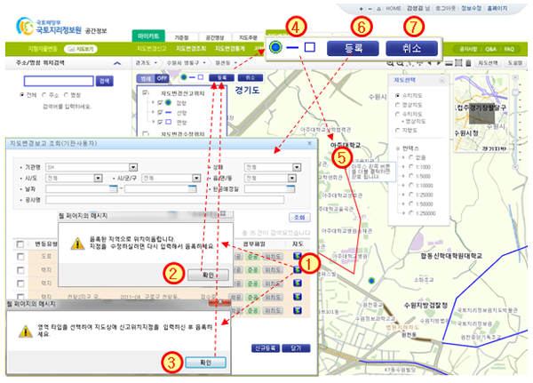

지형지물변동 > 지도변경신고 > 기관신고 > 지도위치입력
| ① |
 |
버튼을 클릭하면 등록된 위치가 있을 경우 ②에서 확인 후 해당 위치로 이동하며, 등록된 위치가 없을 |
|
| |
경우 ③에서 확인 후 배경지도화면에서 직접 입력할 수 있도록 지도화면으로 이동된다. |
| ② |
위치 이동 알림 메시지로 확인을 클릭하면 배경지도의 등록된 위치로 이동한다 |
| ③ |
| 위치 등록 알림 메시지로 확인을 클릭하면 지도배경화면에 위치등록 |
|
가 |
|
| |
나타난다. |
| ④ |
| 위치등록 도구박스에서 해당 버튼( |
|
)을 클릭하여 지도에 점, 선, 면 형태로 입력한다. |
|
| ⑤ |
지도에 위치를 등록하여 심볼 생성 방법 (기존 위치 존재 시 위치 수정됨) |
| |
| - 점( |
|
)은 지도에 등록하고자 하는 위치에 클릭하여 깃발모양( |
|
)의 심볼 생성된다. |
|
| |
예) 주기 또는 영역으로 표현할 수 없는 위치입력 |
| |
| - 선( |
|
)지도에 등록하고자 하는 첫번째 위치에 클릭하면 선의 입력이 시작되며, 마지막 위치에서 |
|
| |
더블 클릭하여 선형 심볼을 생성한다.(최소 2개의 점을 입력한다.) |
| |
예) 도로, 하천, 철도 공사 등의 위치입력 |
| |
| - 면( |
|
)은 지도에 등록하고자 하는 첫번째 위치에 클릭하면 면의 입력이 시작되며, 마지막 위치에서 |
|
| |
더블 클릭하여 면형 심볼을 생성한다.(최소 3개의 점을 입력한다.) |
| |
예) 택지, 산업, 항만, 수자원, 공항, 매립, 관광, 특정, 체육, 폐기물 공사 등의 위치입력 |
| |
※ 확대 및 축소 : 마우스 휠, 이동 : 마우스 우측버튼 누른채로 이동 |
| |
※ 클릭하여 입력하고, 다시 입력하려면 ④의 도구박스의 해당 버튼을 다시 클릭한다. |
| ⑥ |
| [등록] 버튼을 클릭하면 ⑤에서 입력한 심볼이 지도에 등록되며, 이전 창으로 돌아간다. |
|
| ⑦ |
[취소] 버튼을 클릭하면 지도에 위치 등록이 취소되며, 이전 창으로 돌아간다. |